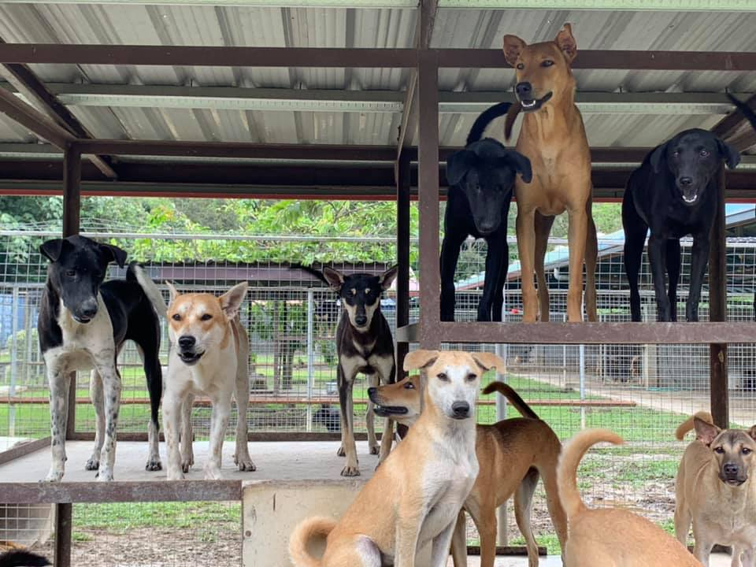
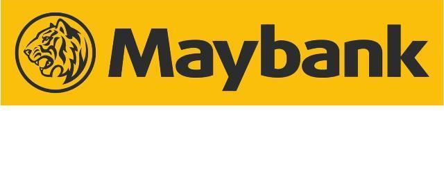
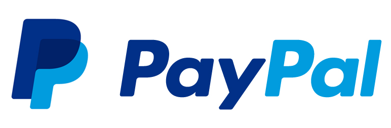
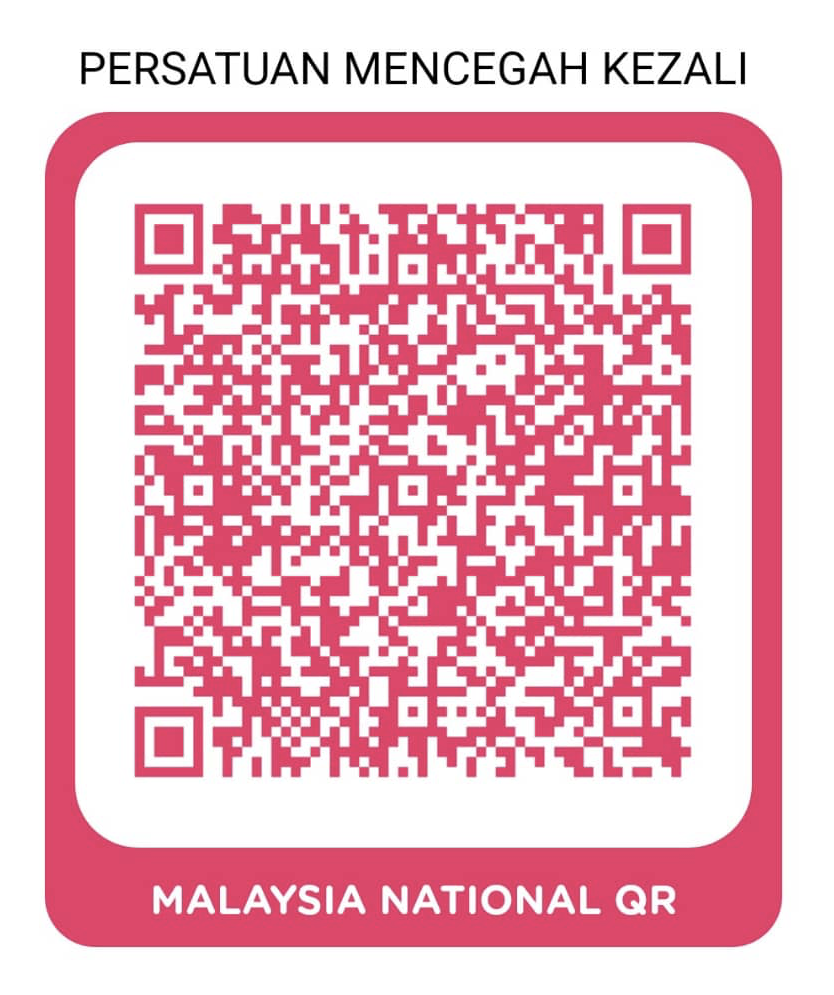

How to make a Donation?
SPCA KK is non-profit organization. We do not receive any funding from the government and rely entirely on public donations. Your contribution will help us to sustain the following operations and works:
- Animal shelter operations and maintenance
- Feeding shelter animals
- Veterinary services and medication
- Spaying and neutering program
- Public education on animal welfare
- Inspectorate and animal rescue services
Donation methods are as below:
A. Monetary Donation.
1. Bank Deposit / Online Transfer (Direct deposit in Malaysia or International Transfer from overseas)
| For Shelter Operations and Animal Welfare Works. |
|---|
| Beneficial Name: | Persatuan Mencegah Kezaliman Terhadap Haiwan
Also known as SPCA KK (Society for the Prevention of Cruelty to Animals Kota Kinabalu) |
| Address: | P.O.Box 17338. 88873 Kota Kinabalu, Sabah, East Malaysia |
| Bank Name: | MAYBANK |
| A/C Number: | 510198677767 |
| Swift Code: | MBBEMYKL |
| Branch Address: | Lot 27 Block D Lintas Square, Jalan Lintas,88300 Kota Kinabalu, Sabah, Malaysia. |
2. Cash
Please contact Enquiry Line 019-880 5400.
3. By cheque or postal order
Please make cheques or postal order payable to “SPCA Kota Kinabalu” and send it to: SPCAKK, P.O. Box 17338, 88873, Kota Kinabalu, Sabah, Malaysia.
4. 
5.
Boost or other QR Pay available app (Maybank / PBe / CIMB Clicks etc)
Please scan and pay via below QR code:

Please inform us of the transaction via Enquiry Line 019-880 9660 (Whatsapp available) or email us at
info@spcakk.org, giving your full name, postal address and donation amount so that an official receipt
can be issued to you. All donations are tax deductible.
★☆★☆★☆ All donations are tax deductible. ☆★☆★☆★
B. Donation in kind.
We are always in need of following items for our animals.
Your donation will help to bring down the operating costs.
Please review the wish list below:
Contact us: 019-8809660 (Whatsapp available)
Email: info@spcakk.org
Details: Your name, your contact number and items to be donated.
Wish List
Rehabilitation and Adoption Centre
| Prime necessities |
|---|
- Milk powder (for kittens and puppies)
- Rice, chicken neck
- IQ Dog Food
- Cat Food - Whiskies, Friskies, Reflex
- Canned Cat Food
- Animal cages, pet carrier / cargo
- Disinfectants such as Dettol, Lysol, Clorox
- Antiseptic hand soaps
- Disposable gloves and face masks
- Cleaning aids - washing soap, dettol, etc.
- Garbage bags
- Old newspapers
- Toilet tissues
- Parasite control such as Frontline, de-worming pills, etc.
- Wellington boots (all sizes and lengths)
|
| Other necessities |
|---|
- Blankets, towels, sheets (all sizes as long as still in good condition)
- Muzzles (all sizes), leashes
- Water and food bowls
- Dog shampoos (all types)
- Cotton wool
- Washing powder
- Cat litter trays and litter (wood pellets)
- Cat scratch posts
- Enrichment toys
- Hoes/spades – for digging/clearing drains
- Wheelbarrows/trolleys – for moving heavy loads
- Heavy duty brooms/dustpans/mops/pails
- Foldable ladder
- Commercial pressure cooker (s)
- Stoves
- Shelving materials
- Storage cabinets
- Canopy/canvas
- Loading pallets – wood/plastic
- Shampoos
- Brushes
- Leashes/Collars (all types/sizes)
- Food/Water bowls
|
Charity Shop
| (New or Preloved Items) |
|---|
- Electrical Goods
- Clothes
- Books
- Kitchenware
- Jewellery
- Anything that is Almost New & In Good Condition.
|
Thank you so much for your generosity!
~ End ~